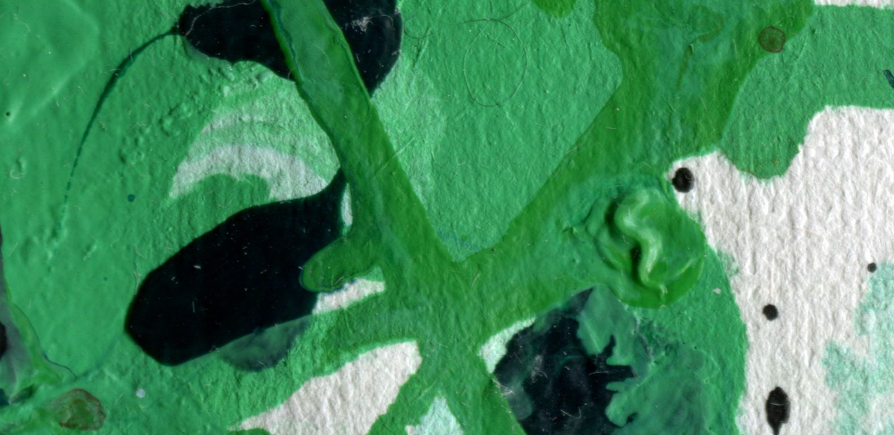

Waarom wordt de Hulk groen? De oorzaak, en waarom hij eerst grijs was
Kort antwoord: Bruce Banner werd geraakt door de straling van een gammabom. Sindsdien verandert hij in de Hulk zodra hij boos of bang wordt. Groen is hij omdat de drukker in 1962 het grijs van de eerste strip niet goed kreeg.

In het kort
De Hulk wordt groen door een ongeluk met gammastraling, en hij verandert als Bruce Banner boos, bang of gestrest raakt. Dat de Hulk groen is en niet grijs, komt door een probleem bij de drukker van de allereerste strip.
| Echte naam | Dr. Bruce Banner, een wetenschapper |
| Oorzaak | De straling van een gammabom die hij zelf had ontworpen |
| Wat de verandering start | Boosheid, angst of stress; in de eerste strips was het het vallen van de avond |
| Eerste strip | The Incredible Hulk nummer 1, mei 1962 |
| Bedacht door | Stan Lee (verhaal) en Jack Kirby (tekeningen) |
| Kleur in die eerste strip | Grijs |
| Groen sinds | Nummer 2, later in 1962 |
De oorzaak, stap voor stap
- De test. Bruce Banner werkt voor het leger aan een nieuw soort bom, de gammabom. Op een testterrein in de woestijn gaat hij afgaan.
- De jongen op het terrein. Vlak voor de ontploffing rijdt een tiener, Rick Jones, het terrein op. Banner rent naar hem toe en duwt hem in een greppel.
- De straling. Zelf haalt Banner het niet meer. De bom gaat af en hij krijgt de volle gammastraling over zich heen.
- De verandering. Hij overleeft het, maar er is iets in zijn lijf veranderd. Diezelfde nacht wordt hij voor het eerst de Hulk: groot, sterk en niet meer de rustige wetenschapper.
- Het vaste patroon. Later in de strips gaat het zoals we het nu kennen: raakt Banner boos of in paniek, dan komt de Hulk. Kalmeert hij, dan wordt hij weer Bruce.
De Hulk is dus niet groen omdat hij boos is. De straling heeft hem veranderd, en boosheid is alleen de knop die de verandering aanzet.
Waarom groen, en niet grijs?
In de allereerste strip uit 1962 was de Hulk grijs. Dat viel tegen bij het drukken: de drukkerij kreeg de grijze kleur op geen enkele pagina gelijk, de ene keer bijna zwart en de andere keer lichtgrijs. Vanaf nummer 2 hebben de makers hem daarom groen gemaakt, een kleur die de drukker wel gelijk kon houden. Zo bleef het.
Het grijs is nooit helemaal verdwenen. Jaren later kwam de grijze Hulk terug in de strips als een eigen versie, slimmer en slinkser dan de groene.
Hoe bozer, hoe sterker
Dat is de bekendste regel van de Hulk, en in de strips klopt hij ook. De groene Hulk heeft geen vaste grens aan zijn kracht: hoe bozer hij wordt, hoe sterker hij wordt. Daarom is hij in gevechten tussen de Avengers altijd de sterkste die ze hebben, en ook de lastigste om te stoppen.
De Hulk in de films en op tv
| Wanneer | Wat | Bruce Banner |
|---|---|---|
| 1977 tot 1982 | Tv-serie The Incredible Hulk | Bill Bixby; de Hulk was bodybuilder Lou Ferrigno, groen geschminkt |
| 2003 | Hulk | Eric Bana |
| 2008 | The Incredible Hulk | Edward Norton |
| Sinds 2012 | The Avengers en de films daarna | Mark Ruffalo |
In de films van Marvel Studios ontstaat de Hulk iets anders: daar gaat het mis tijdens een eigen experiment met gammastraling, niet bij een bomtest. In Avengers: Endgame (2019) lukt het Bruce eindelijk om zijn slimme hoofd en het lijf van de Hulk samen te voegen.
Kan dat in het echt?
Nee. Gammastraling bestaat echt, maar ze maakt een mens niet groter of sterker; ze is juist gevaarlijk voor je lichaam. Artsen gebruiken wel een soort straling om zieke plekken te behandelen, altijd heel voorzichtig. En van boos worden verandert je huidskleur hooguit een beetje rood.
👪 Tip voor ouders
De Hulk is een handig aanknopingspunt voor een gesprek over boosheid: Bruce wil de Hulk niet, en leert juist om rustig te blijven. Vraag eens wat jouw kind doet om af te koelen. De films verschillen in toon en leeftijdsadvies; kijk per titel op Kijkwijzer.
💡 Wist je dat?
Bruce Banner heeft een nicht die ook groen wordt: Jennifer Walters, beter bekend als She-Hulk. Zij kreeg haar krachten door een bloedtransfusie van Bruce.
Lees verder: alles over de Hulk, wie de Avengers zijn of alle Avengers-films op volgorde.
Veelgestelde vragen
Waarom wordt de Hulk groen?
Bruce Banner werd geraakt door de straling van een gammabom. Sindsdien verandert hij in de grote groene Hulk zodra hij boos, bang of gestrest raakt. De straling is de oorzaak; boosheid zet de verandering alleen aan.
Waarom was de Hulk eerst grijs?
In de eerste strip uit mei 1962 was de Hulk grijs, maar de drukkerij kreeg dat grijs niet gelijk op elke pagina. Vanaf nummer 2 werd hij daarom groen.
Wie heeft de Hulk bedacht?
Stan Lee schreef het verhaal en Jack Kirby tekende hem. De Hulk verscheen voor het eerst in The Incredible Hulk nummer 1, in mei 1962.
Wordt de Hulk sterker als hij bozer wordt?
Ja. In de strips geldt: hoe bozer de Hulk, hoe sterker hij wordt. Daarom heeft zijn kracht eigenlijk geen grens.
Wie speelt de Hulk in de Avengers-films?
Mark Ruffalo, sinds The Avengers uit 2012. Daarvoor speelden Eric Bana (2003) en Edward Norton (2008) Bruce Banner.